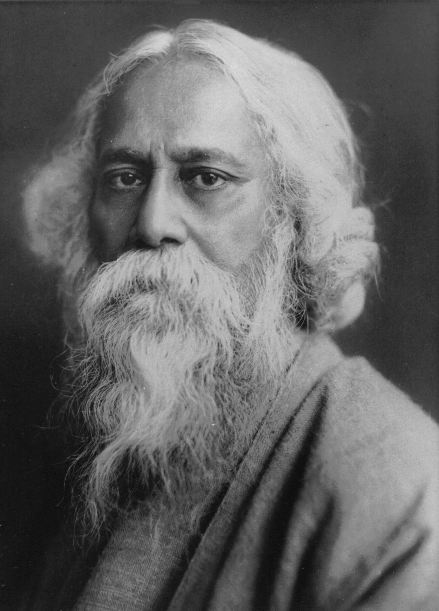

Read More >

watch Videos
Poet | Philosopher | Musician | Writer | Educationist |
Nobel Prize Winner
Rabindranath Tagore born as Rabindranath Thakur on 7 May 1861. Sobriquet Gurudev, Kobiguru was an Indian Bengali polymath—poet, writer, playwright, composer, philosopher, social reformer and painter. He reshaped Bengali literature and music as well as Indian art with Contextual Modernism in the late 19th and early 20th centuries. Author of the "profoundly sensitive, fresh and beautiful" poetry of Gitanjali, he became in 1913 the first non-European and the first lyricist to win the Nobel Prize in Literature.Tagore's poetic songs were viewed as spiritual and mercurial; however, his "elegant prose and magical poetry" remain largely unknown outside Bengal. He is sometimes referred to as "the Bard of Bengal". He was a fellow of the Royal Asiatic Society.
Tagore began writing poetry at a very early age, and during his lifetime he published nearly 60 volumes of verse, in which he experimented with many poetic forms and techniques—lyric, sonnet, ode, dramatic monologue, dialogue poems, long narrative and descriptive works, and prose poems.
Tagore was a prolific composer with around 2,230 songs to his credit. His songs are known as rabindrasangit ("Tagore Song"), which merges fluidly into his literature, most of which—poems or parts of novels, stories, or plays alike—were lyricised.
According to him, the primary objective of education was to enable the preservation of the perfect symphony between one's life and the world outside. There are four fundamental principles in Tagore's educational philo- sophy naturalism, humanism, internati- onalism and idealism.
“You can’t cross the sea merely by standing and staring at the water” ― Rabindranath Tagore
Developed By - Rupesh Gaikwad
January 2022